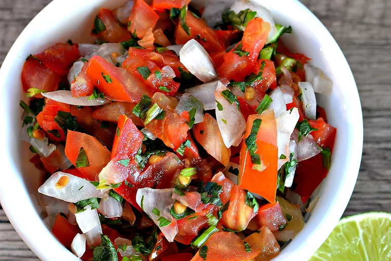

Salsa

Description
This salsa recipe is very easy to make for any skill level. Commonly eaten with tortilla chips.
Ingredients
- 4 large tomatoes, chopped
- 1 onion, chopped
- 1 tomatillo, diced
- 1/2 cup chopped fresh cilantro
- 3 cloves garlic, minced
- 1 tablespoon lime juice
- Salt to taste
- 1 jalapeno pepper, minced
Steps
- Gather all ingredients.
- Combine tomatoes, onion, tomatillo, cilantro, garlic, lime juice, and salt in a medium sized mixing bowl. Mix well.
- Add 1/2 of the jalapeno pepper and taste. If you desire more spice, then add the remaining 1/2 jalapeno.
- Cover the salsa and chill until ready to serve.